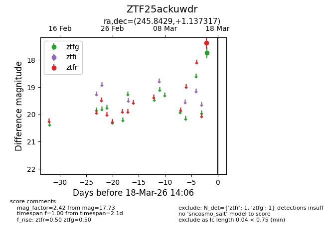
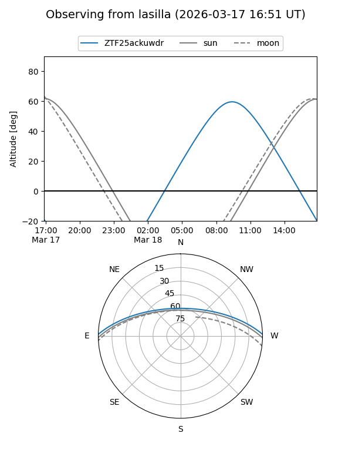
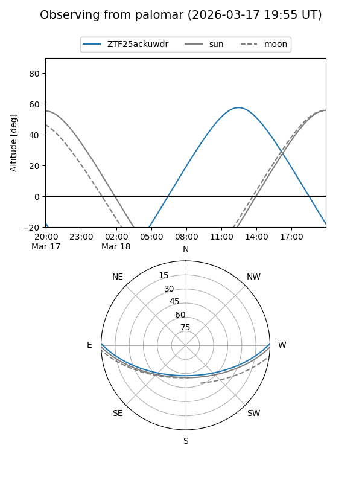

ZTF25ackuwdr
Target ZTF25ackuwdr at 2026-03-18 14:08
Aliases and brokers:
FINK: link
Lasair: link
ALeRCE: link
alt names
ZTF25ackuwdr (ztf,fink_ztf)
Coordinates:
equatorial (ra, dec) = 245.8429,+1.13732
equatorial (HMS+DMS) = 16:23:22.30,+01:08:14.34
galactic (l, b) = (15.0996,+33.00816)
Flags:
Photometry:
last ztfg=17.73, ztfr=17.37
1 ztfg, 1 ztfr detections
Lightcurve

Visibility


Additional plots